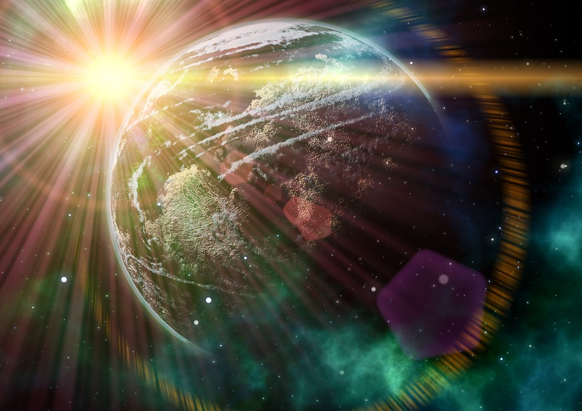

Calor y temperatura
Sabemos que las aplicaciones de la energía calorífica son muy abundantes y conocidas, una aplicación de uso domestico muy habitual es la utilizada para calentar el agua sanitaria.
Al hablar de calor, habitualmente lo relacionamos con la energía térmica o energía calorífica, con la temperatura de los cuerpos, con el movimiento de las partículas, e incluso sabemos que la fuente más importante de energía térmica proviene del sol. Pero, ¿sabemos realmente qué es el calor, qué relación existe con la temperatura y el movimiento de las partículas, o con la energía térmica? Ese va a ser nuestro objetivo, conocer científicamente qué es el calor.

El objeto de estudio de esta propuesta didáctica será la investigación del calor que es inherente : su origen, medida, efectos, propagación, su aplicación y utilización responsable. Vamos a investigar el calor, enfrentándonos a diferentes retos y situaciones problema. Comprobaremos también que la cultura científica es indispensable en nuestra sociedad y muy útil en nuestra vida cotidiana.
Realizaremos investigaciones científicas, simulaciones digitales, lecturas científicas y resolveremos cuestiones PISA.
Cualquier momento es perfecto para aprender algo nuevo
Albert Einstein

Recurso Educativo Abierto del Proyecto EDIA de Cedec
Física y Química. Educación Secundaria no Obligatoria
Autora: María Jesús Serna Martín